ROS2 Guide
Installation
Mini Pupper’s ROS2 installation package is based on ros2_setup_scripts which is written by one of our contributor @Tiryoh.
Mini Pupper’s ROS2 version is based on Champ open source project, and we made some changes to SLAM and Navigation functions.
Mini Pupper’s software supporting lidar sensor is based on ldlidar_stl_ros2 open source project.
We recommend you explore Mini Pupper with ROS2 network, make sure your PC and Mini Pupper have connected to the same WiFi.
Through the following steps, you will be able to setup the ros2 for your remote PC and the Mini Pupper.
1. PC Setup
PC Setup corresponds to PC (your desktop or laptop PC) for controlling Mini Pupper remotely. Do not apply these commands to your Mini Pupper.
WARNING: The contents in this chapter corresponds to the Remote PC (your desktop or laptop PC) which will control Mini Pupper. Do not apply these commands to your Raspberry Pi on Mini Pupper or Compute Module 4 on Mini Pupper 2.
NOTE: This instruction was tested on Linux with Ubuntu 22.04 and ROS2 Humble.
1.1 Install ROS 2 Humble
Open the terminal with Ctrl+Alt+T from Remote PC.
cd ~
sudo apt update
git clone https://github.com/Tiryoh/ros2_setup_scripts_ubuntu.git
~/ros2_setup_scripts_ubuntu/ros2-humble-ros-base-main.sh
source /opt/ros/humble/setup.bash
After ROS 2 installation, download the Mini Pupper ROS package in the workspace.
1.2 Install Mini Pupper ROS Repository
Open the terminal with Ctrl+Alt+T from Remote PC.
mkdir -p ~/ros2_ws/src
cd ~/ros2_ws/src
git clone https://github.com/mangdangroboticsclub/mini_pupper_ros.git -b ros2-dev mini_pupper_ros
vcs import < mini_pupper_ros/.minipupper.repos --recursive
1.3 Install Dependent ROS 2 Packages and Build Package
Open the terminal with Ctrl+Alt+T from Remote PC.
cd ~/ros2_ws
rosdep install --from-paths src --ignore-src -r -y
sudo apt install ros-humble-teleop-twist-keyboard
sudo apt install ros-humble-teleop-twist-joy
colcon build --symlink-install
1.4. Export Robot Model
Open ~/.bashrc with text editor in the terminal.
nano ~/.bashrc
Scroll to the end of the file.
Add the following line to export the robot model with the computer. Please use the proper keyword among mini_pupper, mini_pupper_2 for the ROBOT_MODEL parameter according to your robot model.
export ROBOT_MODEL=mini_pupper_2
Save the file with Ctrl+S and exit with Ctrl+X.
Run the following command to apply the change.
source ~/.bashrc
2. Mini Pupper Setup
2.1 Image flashing
The steps below are for you to setup ROS2 environment of Mini Pupper by yourself. You can also download the pre-built ROS image for Mini Pupper side, named “YYYYMMDD_MD-Puppy2_ROS2Humble_Ubuntu22.04.img” or “YYYYMMDD_MD-Puppy1_ROS2Humble_Ubuntu22.04.img”. Please select the appropriate image according to the date and the robot model.
The image can be flashed into the card using an adaptor. If your PC do not have a microSD slot, please use a microSD card reader to burn the image.
Download ubuntu-22.04.2-preinstalled-server-arm64+raspi.img.xz from the official website, and flash it into your SD card according to the following guide.
Download balenaEtcher from https://etcher.balena.io/.
Press the blue button to choose the destination where you download the image and select the image.
Press the blue button to choose the destination where you are flashing the image into (the address of the SD card).
Press the flash button and you will see the image below. Wait until the process to complete.
2.2 Wifi-Setting
Plug the card into the Mini Pupper card port and setup your own wifi.
Run the following command to edit the network setting of the pupper.
sudo nano /etc/netplan/50-cloud-init.yaml
When the editor is opened, edit the content as below while replacing Mangdang and mangdang with your actual wifi SSID and password.
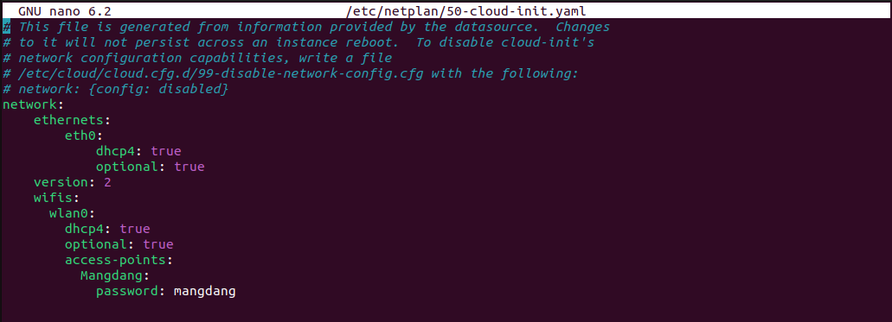Save the file with Ctrl+S and exit with Ctrl+X.
Run the following commands to reboot and connect to your actual wifi.
sudo netplan apply
sudo apt update
sudo apt upgrade
reboot
2.3 Robot model setting
After reboot, open ~/.bashrc with text editor in the terminal.
nano ~/.bashrc
Scroll to the end of the file.
Add the following line to export the robot model with the computer. Please use the proper keyword among mini_pupper, mini_pupper_2 for the ROBOT_MODEL parameter according to your robot model.
export ROBOT_MODEL=mini_pupper_2
Save the file with Ctrl+S and exit with Ctrl+X.
Run the following command to apply the change.
source ~/.bashrc
3. Connecting Mini Pupper to PC
Open two terminals with Ctrl+Alt+T twice, one for connecting to Mini Pupper and one for PC local.
Look at monitor of Mini Pupper to obtain the IP address of it.
Use one of the terminals and run the following command to connect to the Mini Pupper. The default password is “mangdang”.
ssh ubuntu@{IP_ADDRESS_OF_MINI_PUPPER}
Open ~/.bashrc with text editor in both terminals.
nano ~/.bashrc
Scroll to the end of the file for both terminals.
Add the following line in both terminals to setup the connection. The number inputted can be any number, but it should be the same for both terminals.
export ROS_DOMAIN_ID=42
Save the file with Ctrl+S and exit with Ctrl+X.
Run the following command to apply the change.
source ~/.bashrc
Use the following command in both terminals to confirm that the PC and the Mini Pupper are connected:
ros2 node list
Compare the output in both terminals:
If the output in both terminals shows the same list of node which is similar to the picture, your PC and the Mini Pupper is connected
NOTE: the node list depends on the nodes in progress, which may not be exactly the same from the image.
Quick Start
1. Joystick Setup
Through the following steps, you will be able to connect and set up the ROS2 software for the joystick.
Press the HOME button on the controller.
Search for available bluetooth devices on your PC and connect to it.
The video below shows the change of flashlight colour during connection.
Use the following command to check the name of the joystick.
Terminal output: In this case the name of the joystick is “js0”.
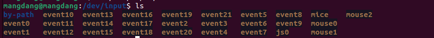Use the following command to check if the joystick us connected.
sudo apt install joystick
jstest /dev/input/{NAME_OF_JOYSTICK}
There will be output as followed if joystick is connected.
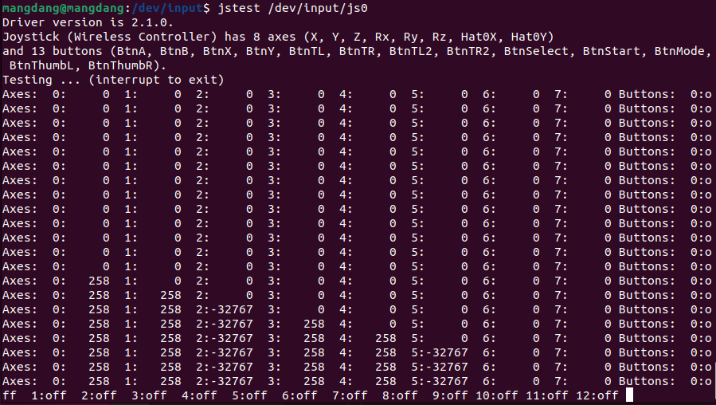2. Bringup
Through the following steps, you will be able launch the software to bringup the Mini Pupper hardware.
Open a terminal with Ctrl+Alt+T to connect Mini Pupper.
Look at monitor of Mini Pupper to obtain the IP address of it.
Use one of the terminals and run the following command to connect to the Mini Pupper. The default password is mangdang.
ssh ubuntu@{IP_ADDRESS_OF_MINI_PUPPER}
Bring up basic packages to start Mini Pupper applications. The command of sourcing the built package, “. ~/ros2_ws/install/setup.bash” can be replaced by “. ~/ros2_ws/install/setup.zsh”, depending on the file type you use.
. ~/ros2_ws/install/setup.bash
ros2 launch mini_pupper_bringup bringup.launch.py
When the robot model is Mini Pupper 2, the terminal output will look like below.
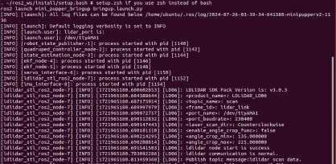Topics and services can be listed with commands below.
Topic list
ros2 topic list
Service list
ros2 service list
3. Teleoporation
Through the following steps, you will be able to teleoperate Mini Pupper either using the keyboard or joystick.
WARNING: Make sure to run the Bringup from the Mini Pupper before teleoperation. Teleoperate the robot, and be careful when testing the robot on the table as the robot might fall.
3.1 Keyboard
Open a terminal with Ctrl+Alt+T on remote PC.
Run teleoperation node using the following command.
. ~/ros2_ws/install/setup.bash
ros2 run teleop_twist_keyboard teleop_twist_keyboard
Terminal output:
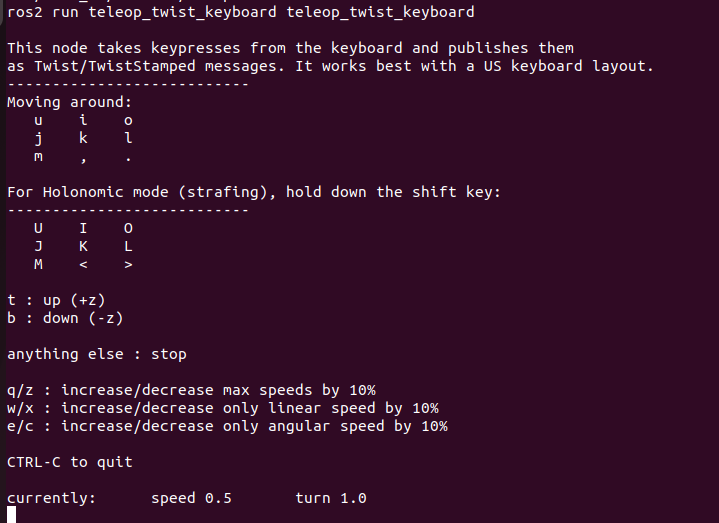You can drive the pupper using the keyboard following the guide below.
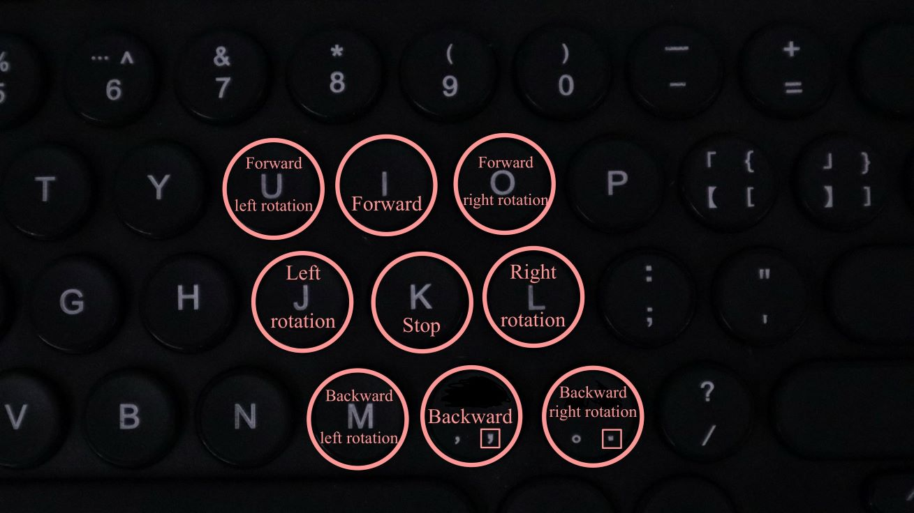The video shows the effect of each keyboard button on the movement of the robot.
3.2 Joystick
NOTE: The design of button of joystick node on ROS2 is different from that mentioned in other sections which is used for non-ROS programs.
WARNING: Make sure to run the Bringup from the Mini Pupper before teleoperation. Teleoperate the robot, and be careful when testing the robot on the table as the robot might fall.
Open a terminal with Ctrl+Alt+T on remote PC.
Run teleoperation node using the following command.
. ~/ros2_ws/install/setup.bash
ros2 launch teleop_twist_joy teleop-launch.py joy_dev:=/dev/input/{NAME_OF_JOYSTICK}
Terminal output:
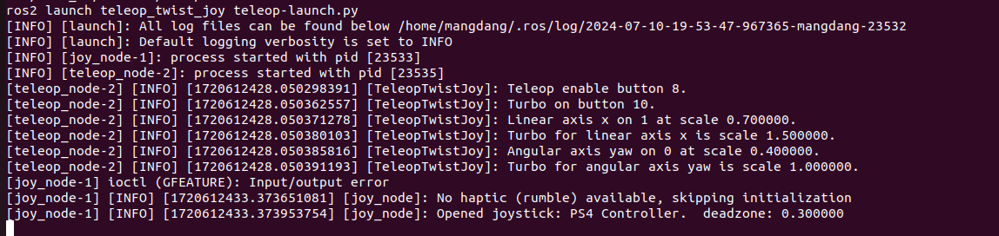You can drive the pupper using the joystick following the guide below.
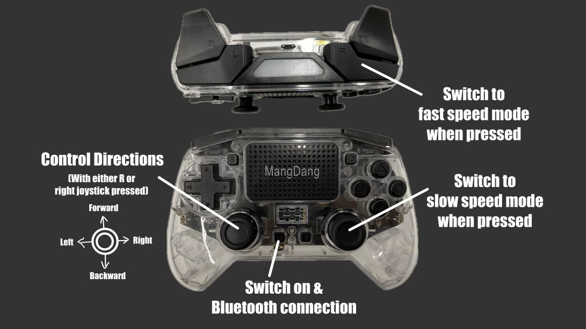The video shows the effect of each button of the joystick on the movement of the robot.
SLAM
The SLAM (Simultaneous Localization and Mapping) is a technique to draw a map by estimating current location in an arbitrary space. Following the steps below, we can use Mini Pupper to draw a map of the surrounding area.
NOTE: Please run the SLAM node on Remote PC. Make sure to launch the Bringup from Mini Pupper before executing any operation.
1. Run SLAM Node
If Bringup is not launched on Mini Pupper, launch Bringup first.
Open a terminal with Ctrl+Alt+T to connect Mini Pupper.
Look at monitor of Mini Pupper to obtain the IP address of it.
Use one of the terminals and run the following command to connect to the Mini Pupper. The default password is mangdang.
ssh ubuntu@{IP_ADDRESS_OF_MINI_PUPPER}
Bring up basic packages to start Mini Pupper applications.
. ~/ros2_ws/install/setup.bash
ros2 launch mini_pupper_bringup bringup.launch.py
Open a new terminal from Remote PC with Ctrl + Alt + T and launch the SLAM node.
. ~/ros2_ws/install/setup.bash
ros2 launch mini_pupper_slam slam.launch.py
2. Teleoperation
Following the steps below, we can use teleoperation to explore unknown area of the map.
NOTE: Once SLAM node is successfully up and running. Vigorous change of the linear and angular speed might lower the smoothness of map generated. WARNING: Make sure to run the Bringup from the Mini Pupper before teleoperation. Be careful when testing the robot on the table as the robot might fall during teleoperation.
2.1 Keyboard
Open a terminal with Ctrl+Alt+T on remote PC.
Run teleoperation node using the following command.
. ~/ros2_ws/install/setup.bash
ros2 run teleop_twist_keyboard teleop_twist_keyboard
2.2 Joystick
Open a terminal with Ctrl+Alt+T on remote PC.
Run teleoperation node using the following command.
. ~/ros2_ws/install/setup.bash
ros2 launch teleop_twist_joy teleop-launch.py joy_dev:=/dev/input/{NAME_OF_JOYSTICK}
After teleoperation, a map with unknown area revealed will be shown as followed:
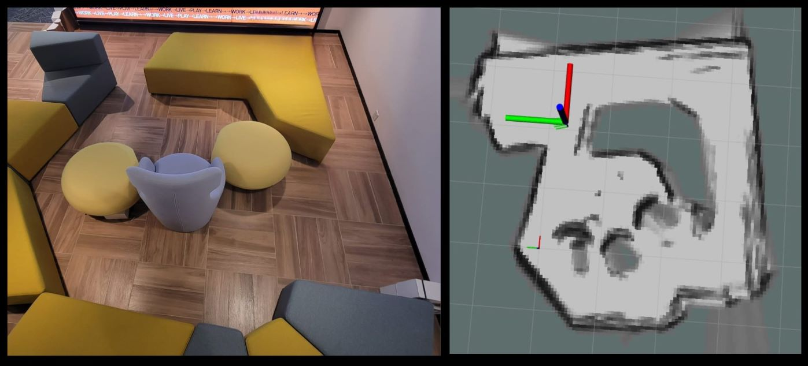3. Save the map
Following the steps below, the files of the map will be saved.
Open a terminal with Ctrl+Alt+T on remote PC.
Use the following command to launch the map_saver_cli node in the nav2_map_server package to create map files.
The map file is saved in the directory where the map_saver_cli node is launched at.
. ~/ros2_ws/install/setup.bash
ros2 run nav2_map_server map_saver_cli -f ~/map
After running the above command, two files will be generated, namely map.pgm and map.yaml.
The following pictures shows the .pgm file to be saved.
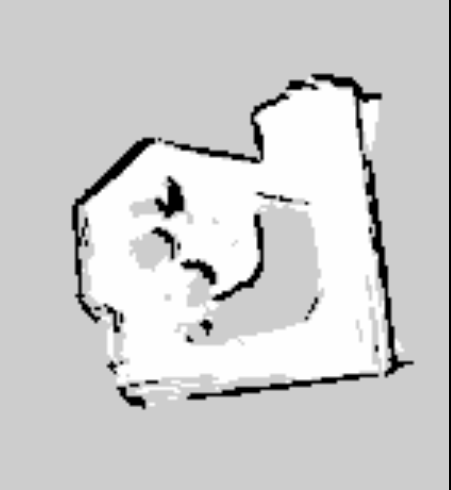Simulation
The following steps allows us to simulate the teleoperation, SLAM and Navigation of Mini Pupper using RViz and Gazebo.
NOTE: Please run the Simulation on Remote PC.
1. RViz Simulation
1.1 Launch Simulation World
Run the following command to launch bringup the robot simulation without connecting to the robot.
. ~/ros2_ws/install/setup.bash
ros2 launch mini_pupper_bringup bringup.launch.py hardware_connected:=False
Run the following command to launch RViz simulation.
. ~/ros2_ws/install/setup.bash
ros2 launch mini_pupper_bringup rviz.launch.py
1.2. Teleoperation
1.2.1 Keyboard
Open a terminal with Ctrl+Alt+T on remote PC.
Run teleoperation node using the following command.
. ~/ros2_ws/install/setup.bash
ros2 run teleop_twist_keyboard teleop_twist_keyboard
1.2.2 Joystick
Open a terminal with Ctrl+Alt+T on remote PC.
Run teleoperation node using the following command.
. ~/ros2_ws/install/setup.bash
ros2 launch teleop_twist_joy teleop-launch.py joy_dev:=/dev/input/{NAME_OF_JOYSTICK}
The following video demonstrates the teleoperation simulation under RViz.
2. Gazebo Simulation
2.1 Launch Simulation World
Run the following command to launch Gazebo simulation.
. ~/ros2_ws/install/setup.bash
ros2 launch mini_pupper_gazebo gazebo.launch.py
2.2. Teleoperation:
2.2.1 Keyboard
Open a terminal with Ctrl+Alt+T on remote PC.
Run teleoperation node using the following command.
. ~/ros2_ws/install/setup.bash
ros2 run teleop_twist_keyboard teleop_twist_keyboard
2.2.2 Joystick
Open a terminal with Ctrl+Alt+T on remote PC.
Run teleoperation node using the following command.
. ~/ros2_ws/install/setup.bash
ros2 launch teleop_twist_joy teleop-launch.py joy_dev:=/dev/input/{NAME_OF_JOYSTICK}
The following video demonstrates the teleoperation simulation under Gazebo.
3. Test SLAM (Mapping) in Gazebo
3.1 Launch Simulation World
Run the following command to launch Gazebo simulation.
. ~/ros2_ws/install/setup.bash
ros2 launch mini_pupper_gazebo gazebo.launch.py
3.2 Run SLAM Node
Open a new terminal from Remote PC with Ctrl + Alt + T and launch the SLAM node.
. ~/ros2_ws/install/setup.bash
ros2 launch mini_pupper_slam slam.launch.py use_sim_time:=true
3.3 Teleoperation
3.3.1 Keyboard
Open a terminal with Ctrl+Alt+T on remote PC.
Run teleoperation node using the following command.
. ~/ros2_ws/install/setup.bash
ros2 run teleop_twist_keyboard teleop_twist_keyboard
3.3.2 Joystick
Open a terminal with Ctrl+Alt+T on remote PC.
Run teleoperation node using the following command.
. ~/ros2_ws/install/setup.bash
ros2 launch teleop_twist_joy teleop-launch.py joy_dev:=/dev/input/{NAME_OF_JOYSTICK}
The following video demonstrates the simulation of SLAM under RViz.
3.4 Save the map
Open a terminal with Ctrl+Alt+T on remote PC.
Use the following command to launch the map_saver_cli node in the nav2_map_server package to create map files.
The map file is saved in the directory where the map_saver_cli node is launched at.
. ~/ros2_ws/install/setup.bash
ros2 run nav2_map_server map_saver_cli -f ~/map
The following pictures shows the .pgm file to be saved.
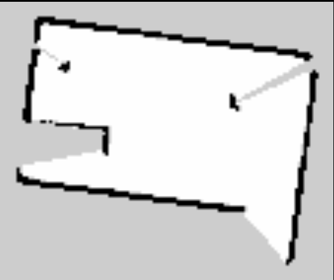Dance
The video demonstrates the dancing function of Mini Pupper.
NOTE: The nodes for playing music and dance cand be executed on both Mini Pupper and Remote PC.
1. Install Music Packages
Open a terminal with Ctrl+Alt+T to connect Mini Pupper.
Look at monitor of Mini Pupper to obtain the IP address of it.
Use one of the terminals and run the following command to connect to the Mini Pupper. The default password is mangdang.
ssh ubuntu@{IP_ADDRESS_OF_MINI_PUPPER}
Use the following command to install required packages for the pupper to play music.
sudo apt-get install ffmpeg portaudio19-dev -y
pip install pydub pyaudio
2. Launch Bringup
1.If Bringup is not launched on Mini Pupper, launch Bringup first.
Open a terminal with Ctrl+Alt+T to connect Mini Pupper.
Look at monitor of Mini Pupper to obtain the IP address of it.
Use one of the terminals and run the following command to connect to the Mini Pupper. The default password is mangdang.
ssh ubuntu@{IP_ADDRESS_OF_MINI_PUPPER}
Bring up basic packages to start Mini Pupper applications.
. ~/ros2_ws/install/setup.bash
ros2 launch mini_pupper_bringup bringup.launch.py
3. Launch Music Node
Open a new terminal with Ctrl + Alt + T and launch the Music node.
. ~/ros2_ws/install/setup.bash
ros2 launch mini_pupper_music music.launch.py
4. Launch Dance Node
Open a new terminal with Ctrl + Alt + T and launch the Dance node.
source ~/ros2_ws/install/setup.bash
ros2 launch mini_pupper_dance dance.launch.py